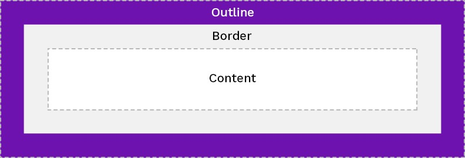

An outline is a line that is drawn around elements, OUTSIDE the borders, to make the element "stand out".
CSS has the following outline properties:
- outline-style
- outline-color
- outline-width
- outline-offset
- outline
The outline-width property specifies the width of the outline, and can have one of the following values:
CSS властивість outline-width визначає товщину контуру елемента.
The height and width properties may have the following values:
- auto - This is default. The browser calculates the height and width
- length - Defines the height/width in px, cm etc.
- % - Defines the height/width in percent of the containing block
- initial - Sets the height/width to its default value
- inherit - The height/width will be inherited from its parent value
Note: Outline differs from borders! Unlike border, the outline is drawn outside the element's border, and may overlap other content. Also, the outline is NOT a part of the element's dimensions; the element's total width and height is not affected by the width of the outline.
This element has a 2px black border and a green outline with a width of 10px.
The outline-style property specifies the style of the outline, and can have one of the following values:
A dotted outline
A dashed outline
A solid outline
A double outline
A groove outline. The effect depends on the outline-color value.
A ridge outline. The effect depends on the outline-color value.
An inset outline. The effect depends on the outline-color value.
An outset outline. The effect depends on the outline-color value.
Note: None of the other outline properties will have any effect, unless the outline-style property is set!
Властивість outline-style встановлює стиль зовнішнього контуру елемента.
На відміну від кордону елемента (наприклад, встановлено за допомогою border або пов'язаних з ним властивостей),
контур елемента не займає зайвого місця, і може бути не прямокутним.
Контур завжди знаходиться над блоком, і це не впливає на положення чи розмір елементу або інших елементів.
This element has an outline-style: dotted.
The outline-color property is used to set the color of the outline.
The color can be set by:
name - specify a color name, like "red"
RGB - specify a RGB value, like "rgb(255,0,0)"
Hex - specify a hex value, like "#ff0000"
invert - performs a color inversion (which ensures that the outline is visible, regardless of color background)
The following example shows some different outlines with different colors. Also notice that these elements also
have a thin black border inside the outline:
A solid red outline.
A double green outline.
An outset yellow outline.
The following example uses outline-color: invert, which performs a color inversion. This ensures that the outline is visible, regardless of color background:
A solid invert outline.
The outline-width property specifies the width of the outline, and can have one of the following values:
- thin (typically 1px)
- medium (typically 3px)
- thick (typically 5px)
- A specific size (in px, pt, cm, em, etc)
The following example shows some outlines with different widths:
A thin outline.
A medium outline.
A thick outline.
A 4px thick outline.
CSS властивість outline-width визначає товщину контуру елемента.
Для того, щоб властивість outline-width спрацювала, необхідно:
- Оголоситие властивість outline-style перед властивістю outline-width. Елемент повинен мати стиль, перш ніж
змінювати його ширину.
- Встановити у властивості outline-style будь-яке значення відмінне від none.
This element has an outline width of 40px outside the border edge.
The outline property is a shorthand property for setting the following individual outline properties:
- outline-width
- outline-style (required)
- outline-color
The outline property is specified as one, two, or three values from the list above. The order of the values does
not matter.
The following example shows some outlines specified with the shorthand outline property:
Нотатка: Для задання контуру зручніше використовувати універсальну властивість outline
A dashed outline.
A dotted red outline.
A 5px solid yellow outline.
A thick ridge pink outline.
The outline-offset property adds space between an outline and the edge/border of an element.
The space between an element and its outline is transparent.
The following example specifies an outline 15px outside the border edge:
This paragraph has an outline 15px outside the border edge.
The following example shows that the space between an element and its outline is transparent:
This paragraph has an outline of 15px outside the border edge.
Властивість 'outline-offset' встановлює відстань між контуром та кордоном елемента (властивість border).
Без задання контури розташовані безпосередньо біля краю кордону.
Використовуючи outline-offset, ви можете розмістити за межами кордону.
Простір між елементом та його контуром прозорий; іншими словами, той же самий, що і фон батьківського елемента.
This element has an outline-offset: 16px.